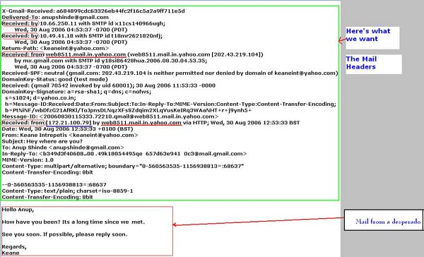
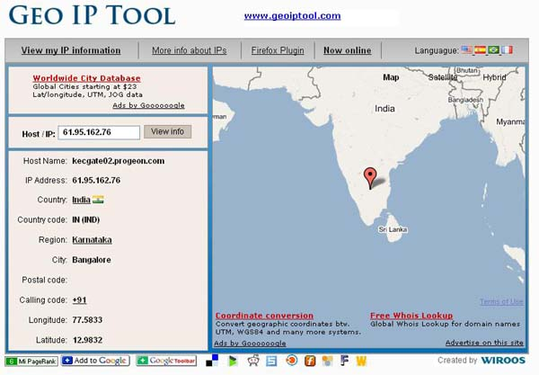
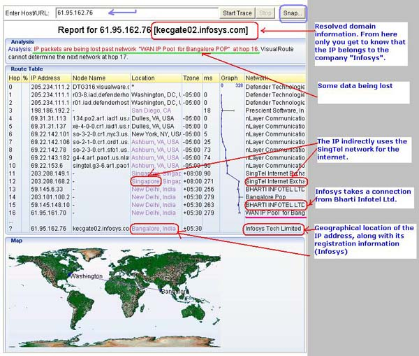
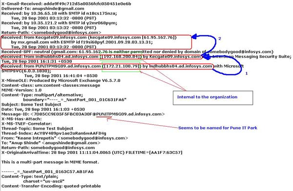
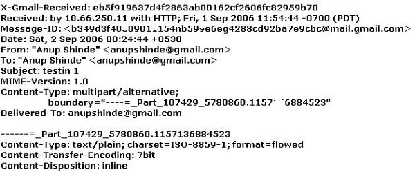

|
||||
|
What I am going to explain here is nothing new, but I would just like to share with you people a trick that has been very useful to me in past few years, especially for superficially scrutinizing cyber-strangers. There is much software out there that will allow you to geo-locate the incoming mails and thereby making this task much easier to perform. For those who want to use this information only casually, the following is the simple procedure. How it works? Geo-location is not a very complex process superficially and it consists of two basic steps.
So how do I start? First you need to get the headers of the mail. These headers are usually hidden by almost all the mail reading applications whether it is web-based or a desktop application. How do I get the headers? Here I will be explaining these only for the web-based mail applications like Yahoo and GMail.
All mails have similar headers, except the way that they are shown. Here I would be taking an example of a mail received in GMail account. It shows the original mail in a simple text-only format Searching the sender’s IP The following is the header as shown in the text format.  Fig 1 - Image highlighting the headers The header is highlighted inside a green box. This header has many fields. Even I do not understand all of those. What is important to us is the “Received field”. Basically our first step is to find out the IP address of the sender. Therefore we just need to the see the Headers saying, “Received From”. As you can see in the image, there are two such “received from” lines. Which one is correct? Actually both are correct. This mail was sent from a Yahoo mail account to a GMail account. It has been received two times. First the sender sent it to the Yahoo Mail Service and then it was sent from the Yahoo Mail service to the GMail service. Well, this is the same as the postal service applying their stamps at different places when the paper mails are routed to the destination. But we are interested in the originating IP address only. And that is the IP address from where the yahoo service received the mail. Here it is “172.21.100.79” as underlined in the image. Note: Take the IP from the last “Received From” header and use that IP for geo-location as explained in steps further. If that IP gives some kind of error while geo-locating use the IP from the second last “Received from” header and so on. But then any IP other than last one may not give completely correct results. Display of mail headers may differ slightly in different services. A bit of search within the header can lead you to the correct IP address. (This again only if the application allows display of such data). So we have completed the first step. Now we need to geo-locate the IP to its destination. Geo-locating the IP Here, I would not be explaining the exact technical process for this. Instead I will be showing how to geo-locate the IP address I have been using two sites for the same. First we will take up the latter one [GeoIPTool - http://www.geoiptool.com/]. This is easy to use and only for locating the IP address’s geographical location. Just input the IP address that you found into the “Host/IP” field in the form and click “View Info”. It will show you the geographical location where IP belongs. Suppose I found the Sender’s IP address as “61.95.162.76”. The following shows me the information about the IP address.  Fig 2 - Image from GeoIPTool Still not satisfied Well, GeoIPTool does not satisfy my requirements enough. Why? As shown in the image above, it gives me information like the IP address comes from the city Bangalore in Karnataka, India. But then Bangalore is a big city. Briefly speaking, it just does not help me too much. Therefore I turned to an old method of tracing it through “Visualware’s VisualRoute”. Currently, the website gives a live demo at VisualRoute- http://visualroute.visualware.com/  Fig 3 - Image from VisualRoute As the above image shows, the IP address is from “Infosys Technologies Ltd, Bangalore”. But along with it, the tool also gives other not-so-important-for-us information like
Is the information, found in this way, always correct? Depends. It need not be always correct. But most of the time, I have found this information to be incorrect in the following cases.
Well this ends the usage; those who are interested in knowing answers to somewhat technical stuff may read further. How to change the outgoing information? Basically you cannot change the IP in the email headers until you use some kind of IP spoofing. But you can make use of an entirely different connection. How? Use the public proxies. When the mails are sent using public proxies, they originate from that public proxy IP address and therefore not possible to track directly (except when the heavy use is monitored and statistically analyzed conclusions are derived) A concept called “Onion Routing” disallows such analysis attacks too. Though at some advanced networking level, you may like to see http://www.onion-router.net/ A not-so-well written article (by me) may allow you people to perform “Onion Routing” What happens when mail is routed within the organization before being sent? Again taking the example of the big organization “Infosys”. This company has a development center at Pune, India. Any mails coming from its Pune development center are sent to the Internet through their Bangalore facility.  Fig 4 - Image from PUNITP, Infosys As seen from the above header, there are many “Received from” headers, but last two of them are unreachable from the Internet, because they are internal to the organization. So we use the third last IP, which resolved to Bangalore India. That is incorrect. The mail is from Pune, but still we cannot use this method to find out the real location of the sender. But from the naming conventions like “PUNITPMSG09.ad.infosys.com”, we can assume that the IP is from Pune. Assumptions may be wrong, but fortunately in this case it was correct. How GMail is preventing geo-location? Not exactly preventing all such mails. But I found that mails sent from one GMail to another GMail account does not have the “Received From” headers. This makes it really difficult to trace the sender. Only GMail authorities would be capable of doing so. It is possible that I am wrong in this case. Correct me if so. The image below shows how GMail blocks “Received from” headers:  Fig 5 - Image from GMail to GMail headers Note: Any example used in this article has scrambled data at many places. References to the organization "Infosys" are purely co-incidental. Please do not hesitate to ask queries/suggestions/issues/anything. Click here for contact information. |
||||